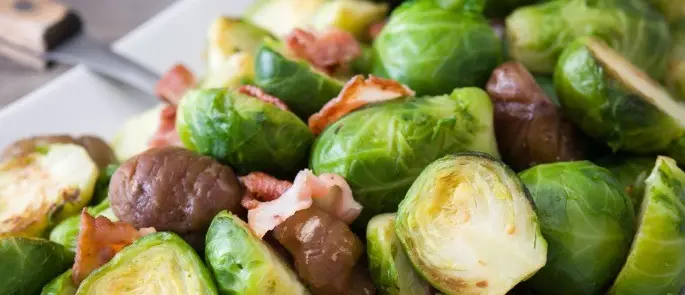

How to keep home clean during the festive seeason.
Christmas is traditionally a time to celebrate with family and friends, and that can involve a lot of extravagance. We frequently celebrate during the festive period by dining out and going to Christmas parties. We can spend excessively on gifts for friends and family members, and often send Christmas cards to everyone we know. The high street lures us in with ‘Christmas offers’, encouraging us to buy shiny new giftware, home decorations and festive treats all wrapped up in expensive looking packaging.
However, all this Christmas excess comes with a cost, and not just to your pocket and your waistline!
As consumers, we are increasingly concerned with sustainability and the environmental impact our actions have, with Christmas proving to be no different. You might be surprised at how much waste is produced at Christmas each year. Last year, we threw away 227,000 miles of wrapping paper, almost enough for us to paper our way to the moon!

In addition, we waste a staggering 4.2 million Christmas dinners, which includes 17.2 million sprouts. Much of this ends up in landfill, but this wasted food could be recycled through Anaerobic Digestion – a natural process in which micro-organisms break down the organic matter found in waste food to produce heat and electricity.
Recycling the sprouts alone would produce enough energy to power a home for 3 years.
Our article will offer some tips on how best to participate in Christmas recycling, and advice on how you can avoid producing so much Christmas waste.
Reducing Food Waste at Christmas
Each Christmas, we produce 30% more waste than we do in the rest of the year. This includes 1,315 tonnes of wasted turkeys and 375 tonnes of wasted mince pies. Not only is the wasted food a huge problem for landfill sites, but the production of these items and their packaging produce vast amounts of carbon emissions and greenhouse gases, as well as creating tonnes of packaging rubbish.
Many people admit to buying more than they need on purpose from fear of running out of food, and then not knowing what to do with the leftovers.
Supermarkets have taken steps to help consumers use up their food by publishing free recipes for leftovers. Similarly, the Government’s food waste awareness service, Wrap, suggests ideas for reducing food waste at Christmas. Recipe ideas include creating sauces, pickles and soups, many of which can be frozen and used at a later date.
Of course, the biggest way to reduce food waste at Christmas is to only buy what you need, so if no one likes Brussel sprouts, don’t buy them!
Reducing Christmas Wrapping Paper Waste
Wrapping gifts up nicely with ribbons and bows is part of the ceremony of gift giving, as much as we enjoy tearing it all apart when we receive a gift ourselves! However, much of the wrapping paper we use is not recyclable, due to glitter, ribbons and plastics in the paper.To reduce the amount of wrapping paper that we currently send to landfill, you could use biodegradable paper to wrap your presents. Most brown paper is recyclable and compostable, and as it is unbleached it undergoes minimal chemical treatments during production. You could also get creative with packaging by using newspapers or magazines, or reusing wrapping paper and gift bags you already have. These will look great under the tree and help you reduce waste this Christmas!

Wrapping presents up in brown paper and tieing with string
If you do need to buy wrapping paper this year, look to buy paper that can be easily recycled. Recently, Marks and Spencer announced that they were removing all glitter from their entire Christmas celebration range this year. This includes their greeting cards, wrapping paper, tags and gift bags. If you are not sure whether the paper you have is recyclable, Wrap recommend doing the scrunch test. Scrunch paper up into a ball and those that stay scrunched up can go in the Christmas recycling.
Reducing Christmas Card Waste
Each year, we buy over one billion Christmas cards and on average send 18 cards each. Meanwhile, Royal Mail deliver around 150 million cards all around the country over the festive period. The majority of these will be thrown away once Christmas is over, causing a huge amount of environmental waste.
You can reduce this impact by encouraging friends and family not to send you a card. Instead, you could even donate the money you would normally spend on cards to a charity, such as the rainforest alliance. With the cards you do receive, how about upcycling them? Get crafty and make your own Christmas cards and gift tags, saving money as well as reducing waste.
If you do have to get rid of your old cards, try and recycle them whenever possible.
Recycling Christmas cards would provide enough power to light 340 Blackpool illuminations!